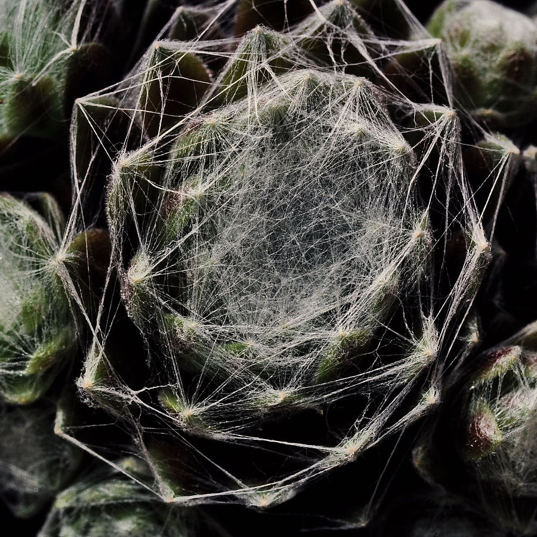
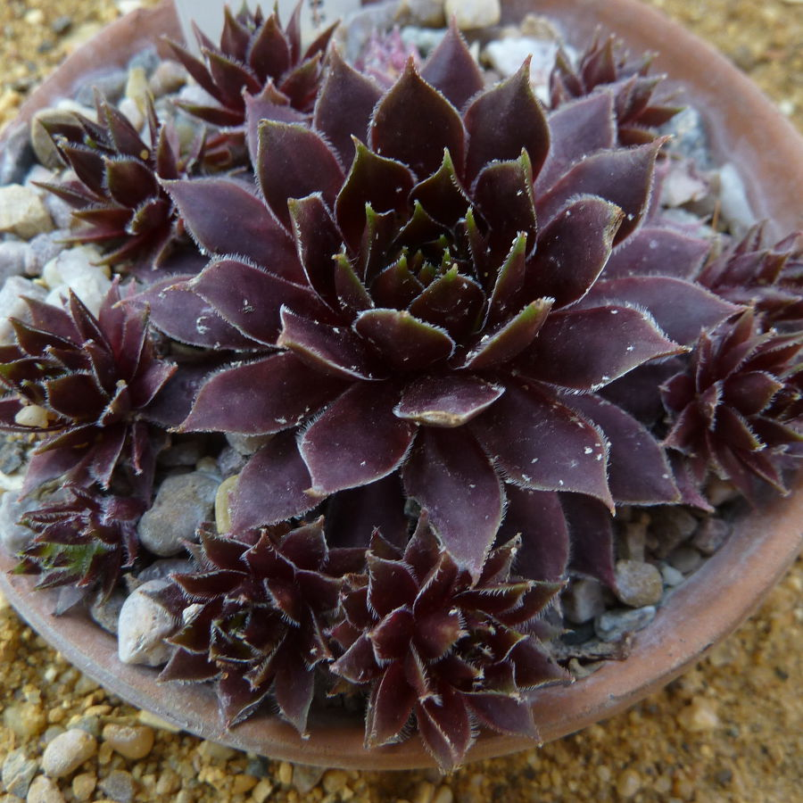
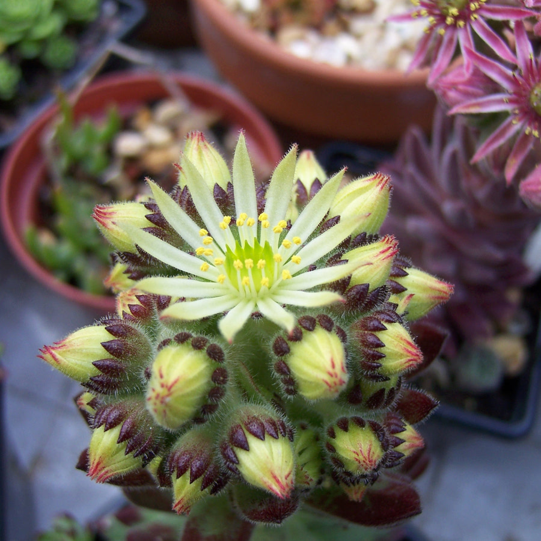
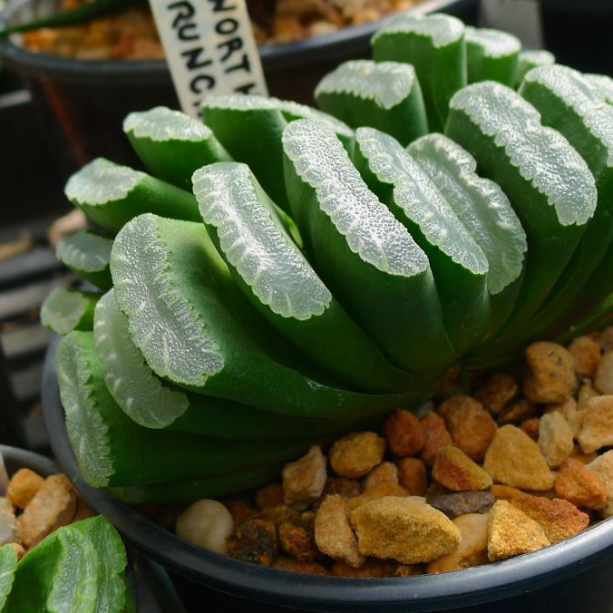
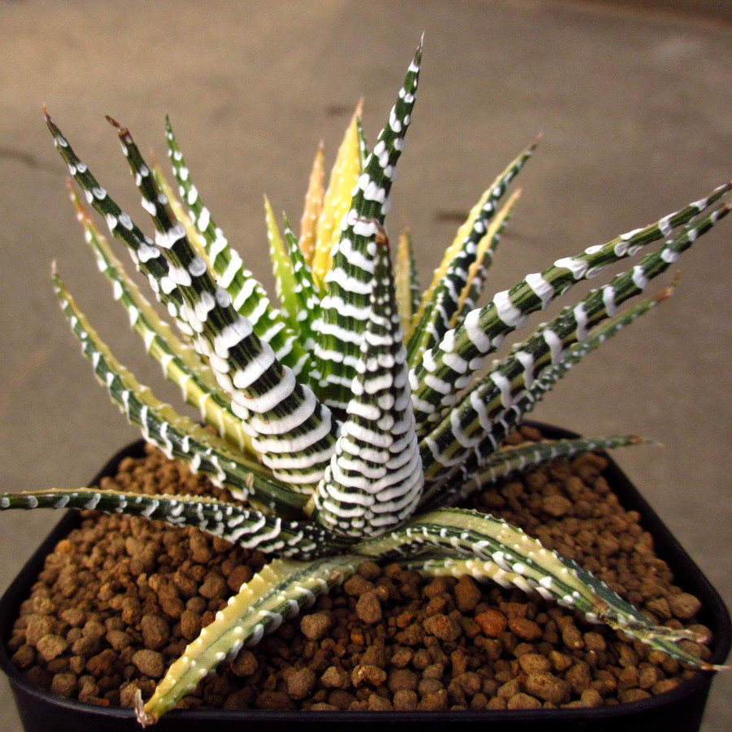
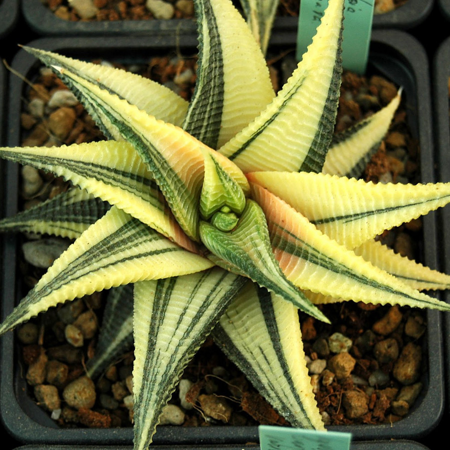
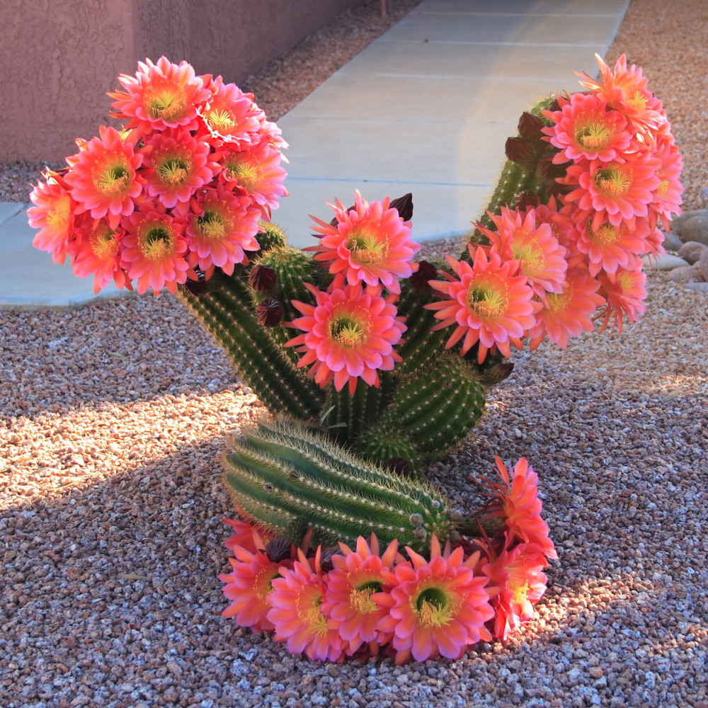
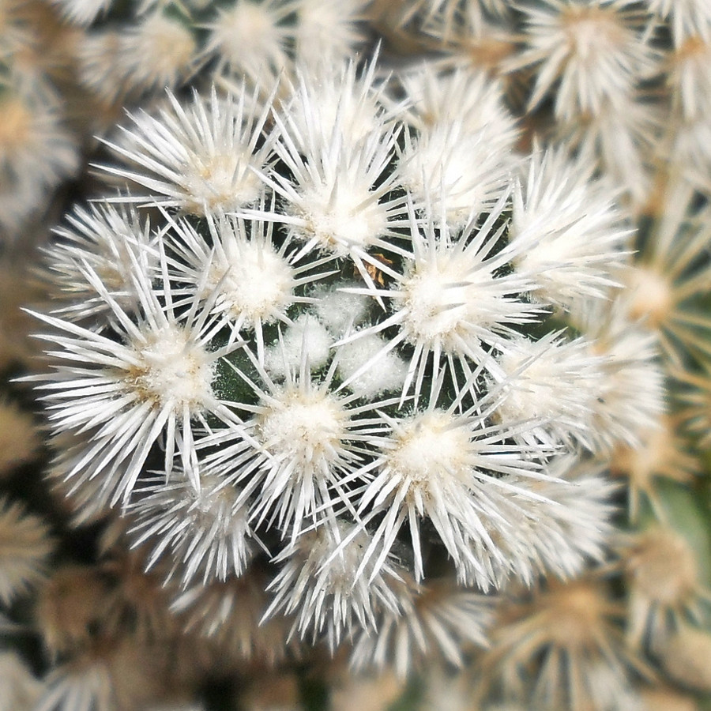
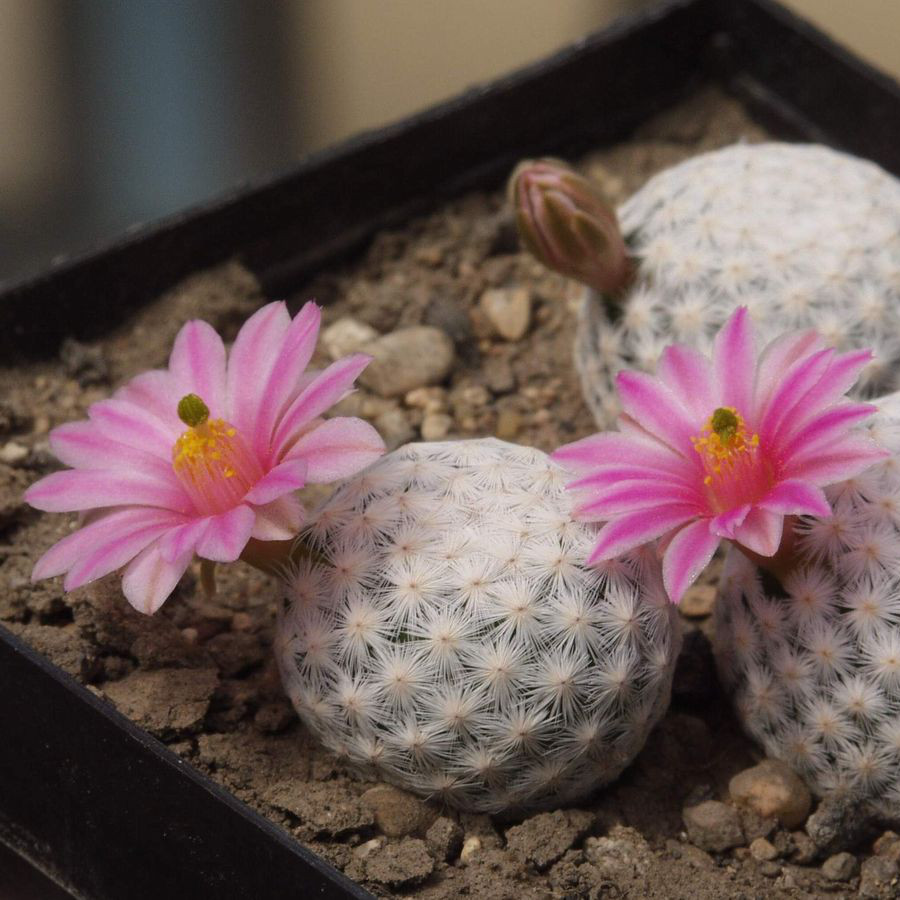

Las siemprevivas son conocidas por su resistencia y por su capacidad para extenderse. Cuando una de las rosetas de siempreviva florece se muere. Pero antes de florecer ya habrá producido nuevas rosetas que irán floreciendo en las próximas estaciones. Le gusta la luz y suele crecer bien en zonas rocosas. Hay variedades con aspectos realmente impactantes, como la Sempervivum arachnoideum, con una capa de hilos semejantes a una tela de araña.



HAWORTHIA
Las haworthias son un género entre los que podemos encontrar suculentas muy decorativas. Están emparentadas con el Aloe, aunque se diferencian en sus flores, que son bilabiadas. Les gusta la luz abundante, pero no debes exponerlas directamente al sol muchas horas. Es preferible ponerlas a la sombra de otro elemento del jardín durante una parte del día. Asegúrate siempre de que la temperatura no baje de los 8-10ºC para evitar que sufra. En invierno es recomendable que permanezcan dentro de casa, por las heladas. En una de las imágenes puedes ver la Haworthia Truncata, con su extraño aspecto de haber sido cortada.



CACTÁCEAS
Si hablamos de suculentas, no podemos olvidarnos de los cactus, probablemente las más famosas de estas plantas. Hay más de 1600 especies dentro de esta familia, decorativas, comestibles, enanas y enormes, con espinas y sin ellas… La variedad de cactus es inmensa y con toda seguridad hay alguna que se adapte a tu clima y a tu gusto. No requieren demasiados cuidados, lo que las convierte en plantas idóneas para decorar tu casa. Todos hemos visto los enormes saguaros (Carnegiea gigantea) del desierto en el cine, pero hay cactus que se adaptan con gran facilidad a otros climas. Un ejemplo muy conocido es el de la chumbera (Opuntia ficus-indica) que se cultiva extensamente en el Mediterráneo.



| PAG. | |||
|---|---|---|---|
| 0 | INTRODUCCION | ||
| 1 | Argyroderma | Echeveria | Lithops |
| 2 | Sempervivum | Haworthia | Cactáceas |
| 3 | Aeonium | Agave | Aloe |
| 4 | Graptopetalum | Orostachys | Pleiospilos |